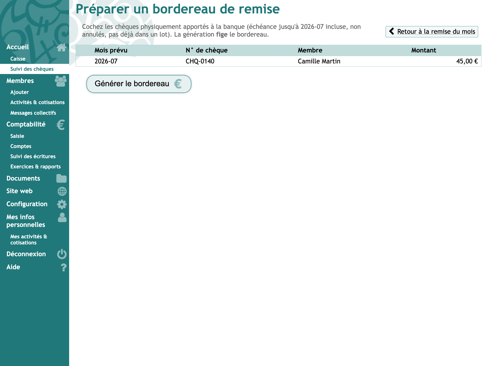
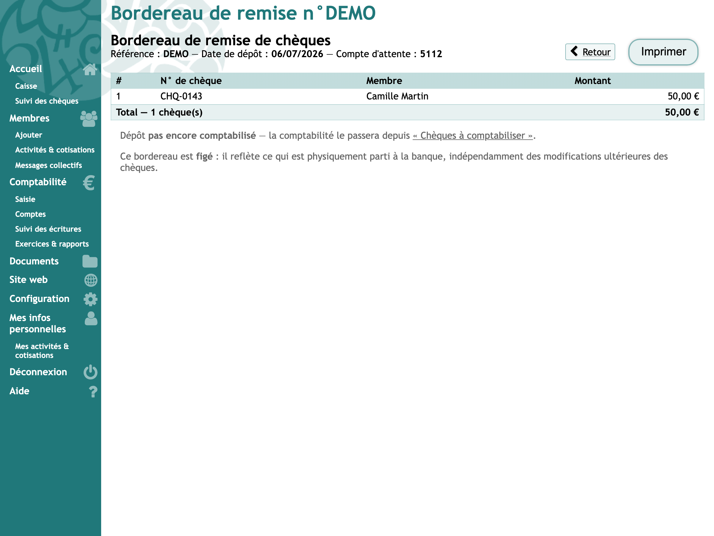

Sur cette page
Un bordereau passe par trois états : en cours (on remplit la pile), déposé (elle est partie en banque) et comptabilisé (l'écriture de remise est passée). Seul le passage au guichet le fige.
Constituer un bordereau
Depuis la liste des chèques, on coche ceux qu'on a en main et on clique Ajouter au bordereau. Rien n'est coché au départ ; les chèques qui ne peuvent pas partir (annulés, déjà sur un bordereau) gardent une case grisée.
Le menu à côté du bouton propose les bordereaux en cours et « Nouveau bordereau ». Le plus récent est choisi d'office, puisqu'un passage à la banque égale un bordereau. On peut donc changer de mois, revenir, ajouter d'autres chèques : tout se cumule dans la même pile.
À mesure qu'on coche, le compteur affiche combien de chèques et quel total, de quoi vérifier l'écran contre la pile qu'on a en main.

Tant qu'il est en cours
Le bordereau en cours se modifie librement :
- Ajouter des chèques ramène à la liste ;
- Retirer sort un chèque, qui repasse aussitôt « à encaisser » ;
- la case devant chaque ligne sert à pointer la pile qu'on a en main : elle n'enregistre rien, elle aide seulement à ne pas perdre le fil en recomptant ;
- Supprimer le bordereau rend tous ses chèques à l'état « à encaisser ».
Rien n'est à comptabiliser à ce stade : aucun chèque n'est encore parti.
Le porter en banque
De retour de la banque, Marquer comme déposé en banque, avec la date du dépôt. Ce geste fige le bordereau : il liste désormais exactement ce qui est parti, à une date donnée. Il devient aussi imprimable, pour être remis avec les chèques ou classé, et il entre dans « à comptabiliser ».

Le menu Exporter du bordereau sort sa liste (numéro, membre, montant) en tableur, par exemple pour la joindre à un mail.
Annuler un bordereau déposé
La banque a refusé un chèque au guichet, ou le bordereau a été marqué déposé trop tôt ? Tant que son écriture n'est pas passée, Annuler le bordereau le supprime et rend ses chèques à l'état « à encaisser », pour le refaire. Une fois comptabilisé, le bouton disparaît : il faut d'abord que la comptabilité supprime l'écriture de remise.
Retrouver un bordereau
L'onglet Bordereaux les liste tous, ceux en cours d'abord : date de dépôt, nombre de chèques, total, et état de la comptabilisation. Cliquer sur la référence rouvre le bordereau, pratique pour ressortir une remise d'il y a six mois quand la banque pose une question.

Un bordereau reste « à comptabiliser » tant que son écriture n'existe pas réellement. Si la comptabilité la supprime, il redevient à comptabiliser, ici comme dans la file.
Que faire si…
- … j'ai oublié un chèque dans la pile ?
- Si le bordereau est encore en cours, l'ajouter. S'il est déjà déposé, le chèque partira avec le prochain bordereau.
- … la banque refuse un chèque au guichet ?
- Si le bordereau n'est pas encore marqué déposé, retirer le chèque. Sinon, annuler le bordereau et le refaire sans ce chèque.
- … un chèque revient impayé après le dépôt ?
- Le signaler depuis la liste des chèques : voir chèque rejeté par la banque. Le bordereau, lui, ne change pas : le chèque est bien parti avec. Tant qu'un de ses chèques est rejeté, le bordereau ne peut plus être annulé.
- … je veux réimprimer un bordereau ?
- Le rouvrir depuis l'onglet Bordereaux : un bordereau déposé reste imprimable.